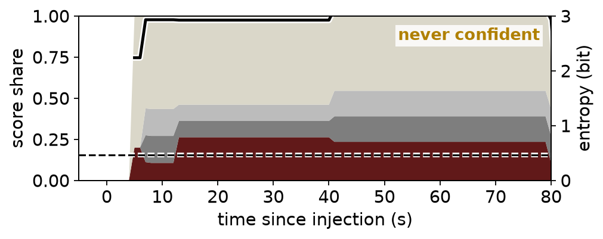
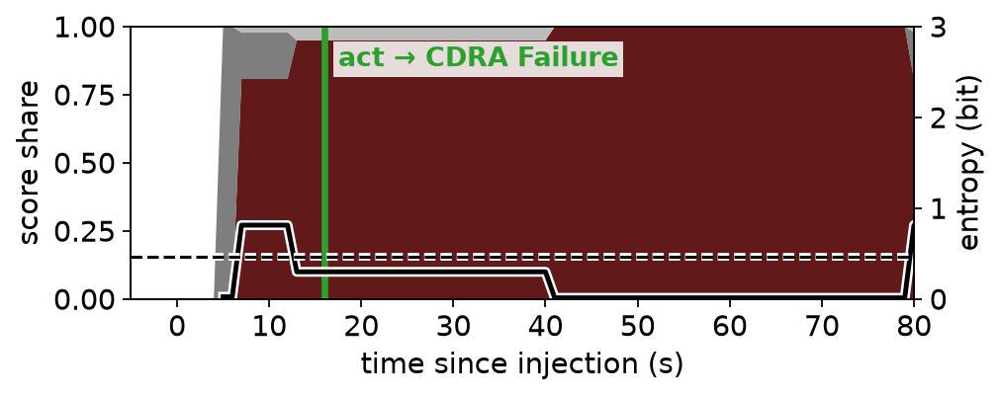
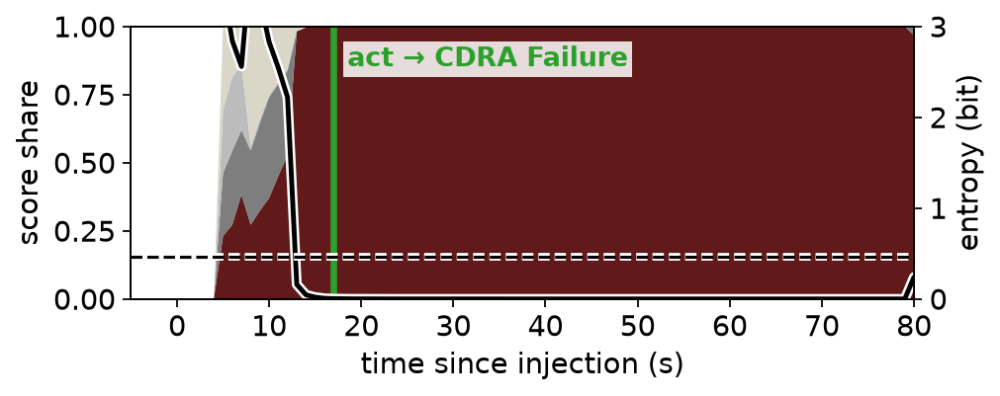
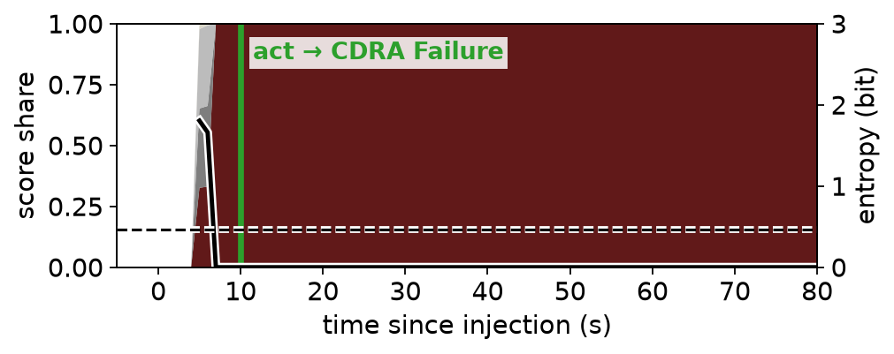

4. Case Study — Diagnosis
CDRA Failure, same loop — four diagnostic methods
Knowledge graph — never confident

Bayesian network — correct at +16 s

Time-series matching, single-channel — correct at +17 s

Time-series matching, multi-channel — correct at +10 s

CDRA Failure (truth)
top rival
second rival
other
━ entropy
╌ 0.47-bit threshold